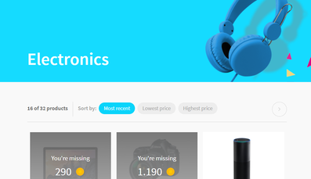
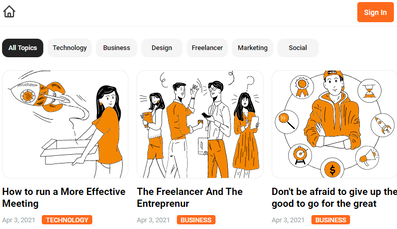
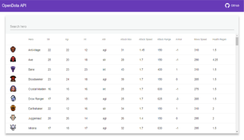
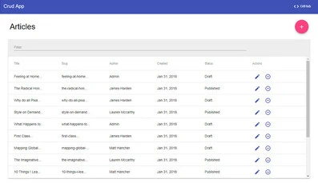

Prácticas y proyectos
-
 Tecnologías: Angular 11, Ng-Zorro, Aerolab API -
 Tecnologías: Fullstack, Angular, Express JS, PostgreSQL -
 Tecnologías: Angular 5, Angular Material, OpenDota API
-
 Tecnologías: Angular 5, Angular Material